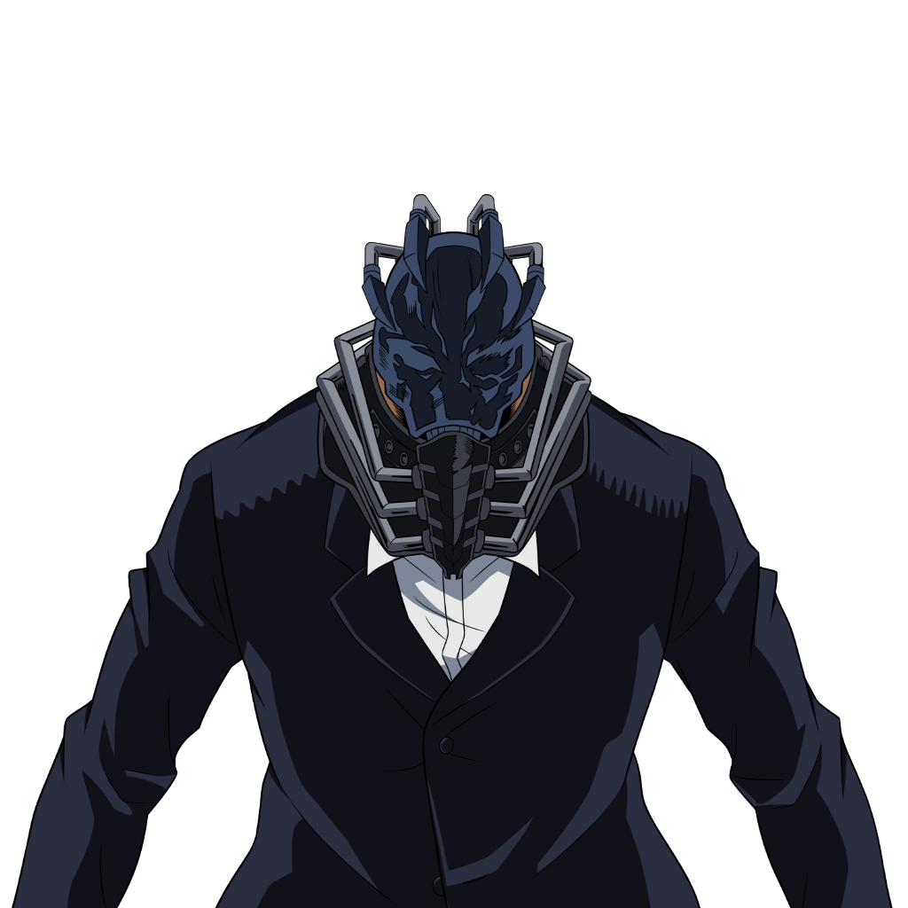
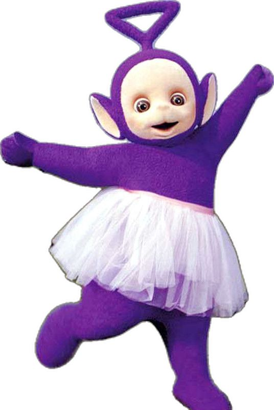

Luis Miguel Pulido
Santiago de Chile, Chile
Jefe de Proyectos | Estudiante Fullstack | Voluntario en FIRES Chile
Dedicado al servicio tanto en el trabajo como fuera de el. Entre hobbies: bailar, lectura, ver anime. Apasionado por aprender.
Edit profileEducacion
Skillnest - Bootcamp de Desarrollo Full Stack
Mayo 2025 - Noviembre 2025
Aprendiendo HTML y CSS
Solicitudes de Conexión (2)
 Naruto
Naruto
Luffy
Tus Conexiones (+500)
Darth Vader
Orochimaru
 Freezer
Freezer
 All for One
Sesshomaru
 Teletubbie Morado